STARTER (for 1.6 kW Type) > INSPECTION |
| 1. INSPECT STARTER ASSEMBLY |
Perform pull-in test.
 |
Remove the nut, and disconnect the lead wire from terminal C.
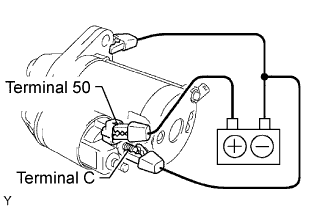 |
Connect the battery to the starter as shown in the illustration. Then check that the clutch pinion gear moves outward.
If the result is not as specified, replace the repair service starter kit.
Perform holding test.
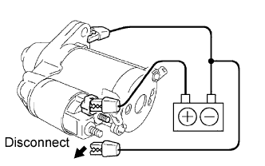 |
With the battery connected as above with the clutch pinion gear out, disconnect the negative (-) lead from terminal C. Check that the pinion gear remains out.
If the result is not as specified, replace the repair service starter kit.
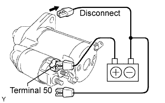 |
Disconnect the negative (-) lead from the starter body. Check that the clutch pinion gear returns inward.
If the result is not as specified, replace the repair service starter kit.
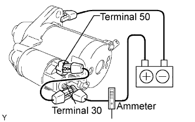 |
Perform operation test without load.
Connect the field coil lead wire to terminal C with the nut.
Grip the starter with a vise.
Connect the battery and an ammeter to the starter as shown in the illustration.
Check that the starter rotates smoothly and steadily while the pinion gear is moving out. Then measure the current.
| 2. INSPECT STARTER ARMATURE ASSEMBLY |
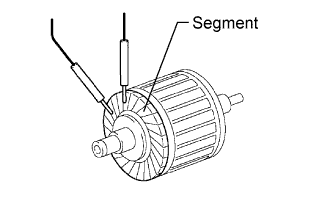 |
Check the resistance.
Measure the resistance according to the value(s) in the table below.
| Tester Connection | Condition | Specified Condition |
| Segments | Always | Below 1 Ω |
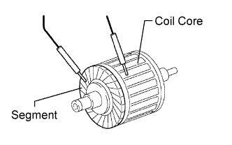 |
Measure the resistance according to the value(s) in the table below.
| Tester Connection | Condition | Specified Condition |
| Segment - Coil core | Always | 10 kΩ or higher |
Check the commutator surface for dirt or burns.
If the surface is dirty or burnt, smooth the surface with 400-grit sandpaper or a lathe.
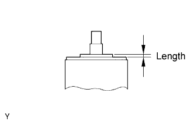 |
Using a vernier caliper, measure the protrusion length.
| 3. INSPECT STARTER COMMUTATOR END FRAME ASSEMBLY |
Check the brush length.
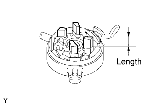 |
Using a vernier caliper, measure the brush length.
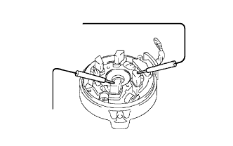 |
Check the resistance.
Measure the resistance according to the value(s) in the table below.
| Tester Connection | Condition | Specified Condition |
| Positive (+) brush - Negative (-) brush | Always | 10 kΩ or higher |
| 4. INSPECT STARTER CENTER BEARING CLUTCH SUB-ASSEMBLY |
Check the gear teeth on the planetary gear, internal gear and starter clutch for wear or damage.
If any of the gears is damaged, replace the starter center bearing clutch sub-assembly.
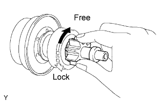 |
Check the starter clutch pinion gear.
Hold the starter clutch and rotate the pinion gear clockwise, and check that it turns freely. Try to rotate the pinion gear counterclockwise and check that it locks.
If necessary, replace the starter center bearing clutch sub-assembly.
| 5. INSPECT REPAIR SERVICE STARTER KIT |
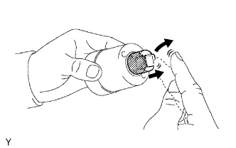 |
Check the plunger.
Push in the plunger, and check that it returns quickly to its original position.
If the result is not as specified, replace the repair service starter kit.
Inspect the pull-in coil.
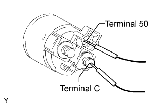 |
Measure the resistance according to the value(s) in the table below.
| Tester Connection | Condition | Specified Condition |
| Terminals 50 - Terminal C | Always | Below 1 Ω |
Inspect the holding coil.
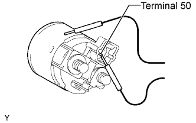 |
Measure the resistance according to the value(s) in the table below.
| Tester Connection | Condition | Specified Condition |
| Terminal 50 - Switch body | Always | Below 2 Ω |